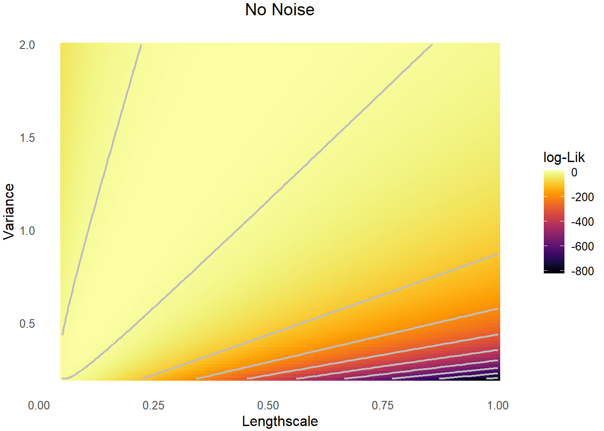
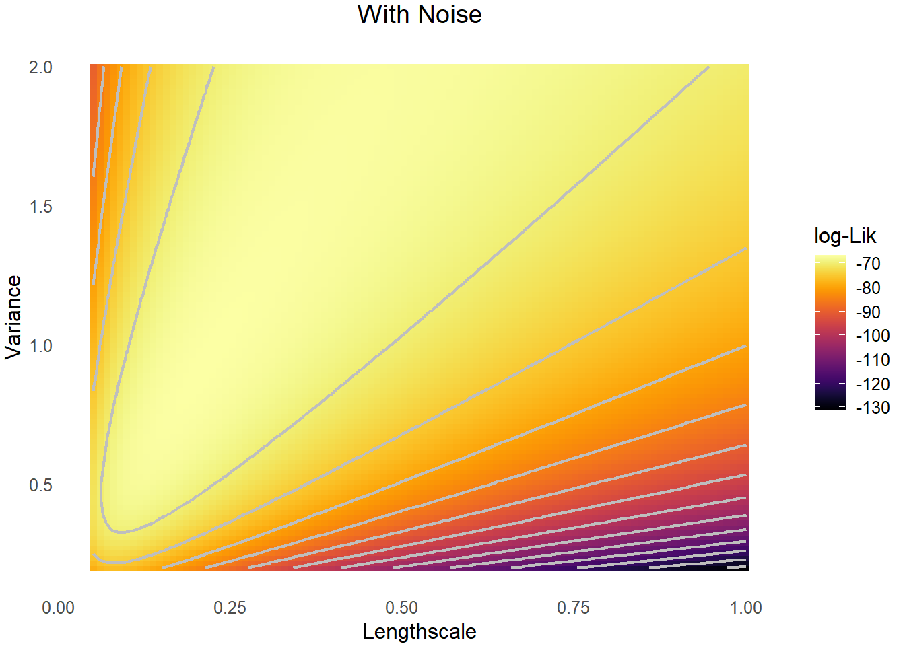
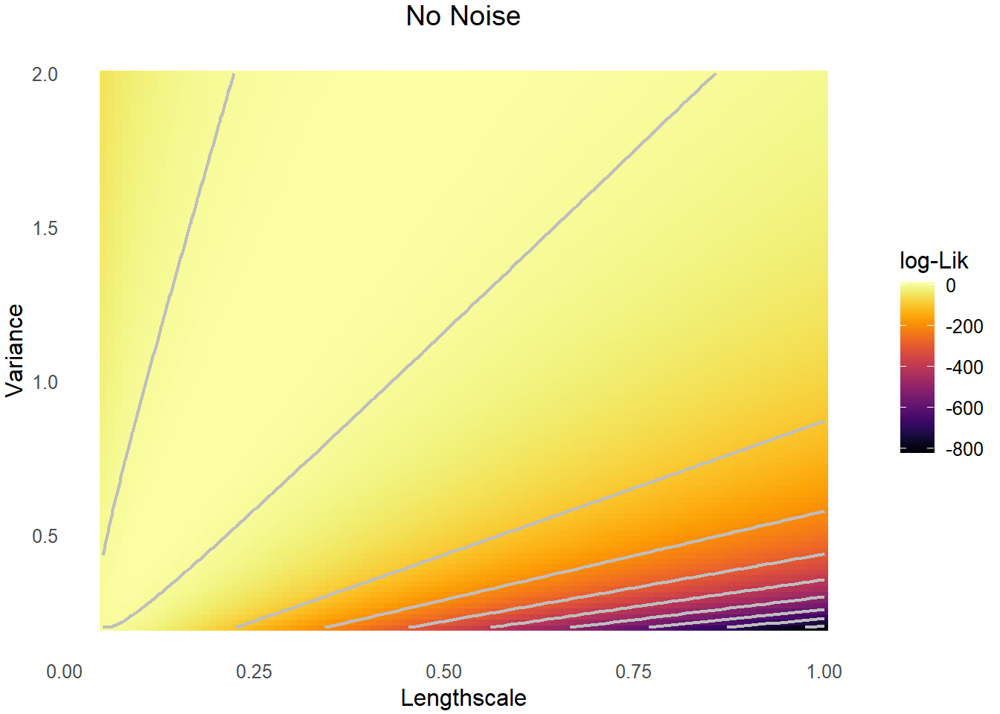
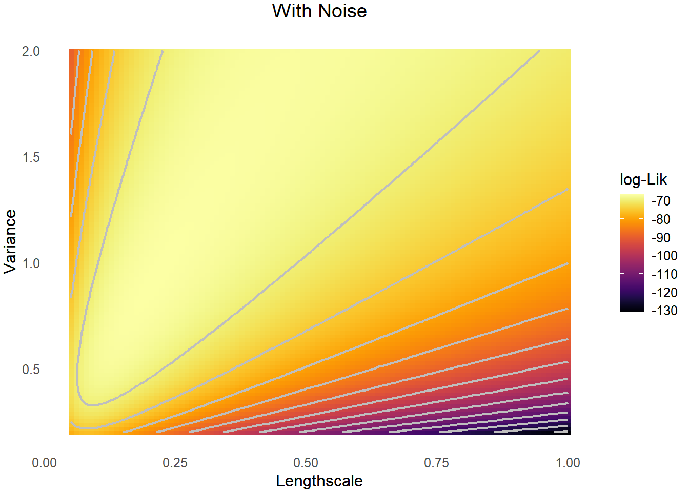

Gaussian Processes (GPs) are central to spatial statistics and nonparametric modeling, offering a principled way to model spatial dependence. The Matérn kernel, in particular, provides a flexible class of covariance functions that control both the range and smoothness of spatial correlation.
However, the identifiability of GP parameters is an important issue sometimes overlooked in practice. Here, we will explore the existing literature on the consistency and identifiability of Matérn GP parameters.
The Matérn covariance function is defined as:
\[ k_\nu(h) = \sigma^2 \cdot \frac{2^{1 - \nu}}{\Gamma(\nu)} \left( \frac{h}{l} \right)^\nu K_\nu\left( \frac{h}{l} \right) \]
where:
Furthermore, we can consider the Fourier transform of the above covariance function and obtain the Matérn spectral density function, given by
\[ S(u) = C \frac{\sigma^2 l^{-2\nu}}{(l^{-2} + u^2)^{\nu + d/2}} \]
for some constant \(C > 0\) where \(d\) is the dimension of the stochastic process.
When considering the asymptotic parameter estiamtions, we often let the number of observations go to infinity. In the context of spatial statistics, there are two cases of this limiting behavior: fixed-domain and increasing-domain. Futhermore, it is standard in the literature to assume that the underlying spatial field is fixed throughout the sampling process (i.e. we can always making observations about the same spatial field sample).
Also called infill asymptotics. The domain of interest remains fixed (e.g., \([0,1]^d\)), while the number of observations increases within that domain.
The spatial domain grows (e.g., from \([0,1]^2\) to \([0, L]^2\)), while maintaining fixed sampling density.
We will restrict ourselves to the fixed-domain asymptotic setting and examine the identifiability issue under this regime. The key theoretical tool we use is the equivalence between probability measures.
Consider two probability measures \(P_1, P_2\) defined on the same probability space \((\Omega, \mathcal{F})\). We say the measure \(P_1\) is absolutely continuous w.r.t. \(P_2\) if \(P_2(A) = 0 \implies P_1(A) = 0\) for all \(A \in \mathcal{F}\), denoted by \(P_1 \ll P_2\). We also say \(P_1\) is equivalent to \(P_2\) if we have \(P_1 \ll P_2\) and \(P_1 \gg P_2\).
The statistical implications of equivalent measures are: (1) we cannot claim with probability one samples from any of the equivalent measure are from which of the measures, (2) if the equivalent measures is a family parameterised by \(\theta \in \Theta\), we cannot consistently estimate all \(\theta\), (3) for equivalent measures, the prediction of a new random variable condition on the same list of random variables agree as the list increases to infinity. Thus, roughly speaking, if the measures are equivalent, we cannot estimate parameters consistently, yet they should yield the same predictions.
We denote \(P_{\sigma, l}\) to be the Gaussian measure for a Matérn GP of smoothness parameter \(\nu\) with variance \(\sigma^2\) and lengthscale \(l\). It turns out that, two such measures \(P_{\sigma_1, l_1}, P_{\sigma_2, l_2}\) are equivalent if and only if \(\sigma_1^2 / l_1^{2\nu} = \sigma_2^2 / l_2^{2\nu}\) (Zhang (2004), Stein (2004)).
This implies that we cannot consistently estimate \(\sigma\) or \(l\), yet we can consistently estimate the microergodic parameter \(\sigma_2^2 / l^{2\nu}\). Additionally, despite the lack of identifiabilities for some parameters, interpolation and predictions remains feasible.
The result above is obtained by a sufficient condition of Gaussian measure equivalence due to Stein (1999), which poses a condition based on the spectral densities of the two measures. The result of Zhang (2004) was established by checking this condition. It should not be too surprising then to accept the critical importance of \(\sigma_2^2 / l^{2\nu}\) by looking at its role in the spectral density of a Matérn kernel.

The observation noise of a spatial model is often known as the nugget in the literature. The result above does not assume the observations are made with noise. The recent work of Tang, Zhang, and Banerjee (2021) extends many of the previous consistency and identifiability results to the case where nuggets occur. The qualitative behaviour remains under this more general setting, yet the asymptotic normality of the maximum likelihood estimator of the microergodic parameter has a different convergence rate: for observation number \(n\), without the nugget the rate is \(n^{1/2}\) and with the nugget the rate is \(n^{1/(2+4\nu / d)}\).
We now visualize likelihoods under noiseless and noisy observations. Both surfaces indicates the non-identifiability of \(\sigma\) and \(l\).


| Scenario | Identifiable Parameters | Key Results |
|---|---|---|
| Noiseless, fixed-domain | Only \(\sigma^2/l^{2\nu}\) | Zhang (2004) |
| Noisy, fixed-domain | \(\sigma^2/l^{2\nu}\), \(\tau^2\) | Tang, Zhang, and Banerjee (2021) |
| Increasing-domain | All parameters | Standard asymptotics apply |